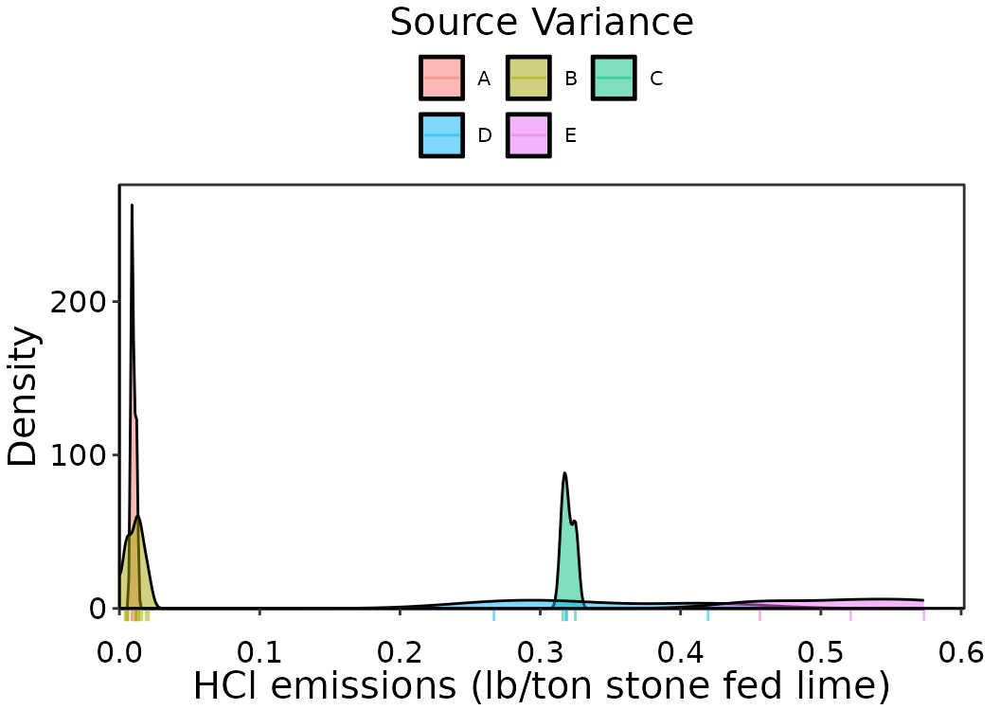
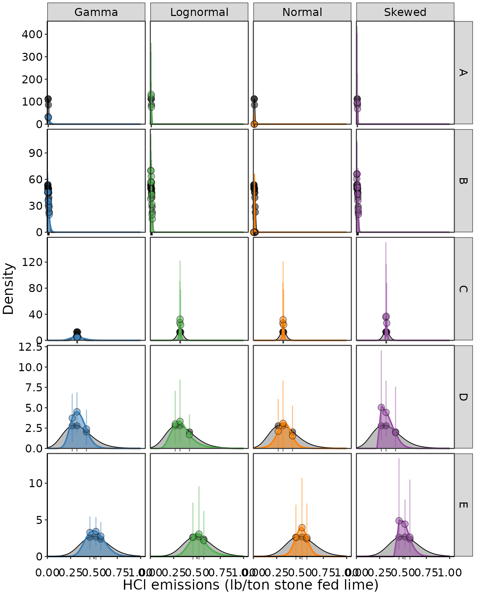
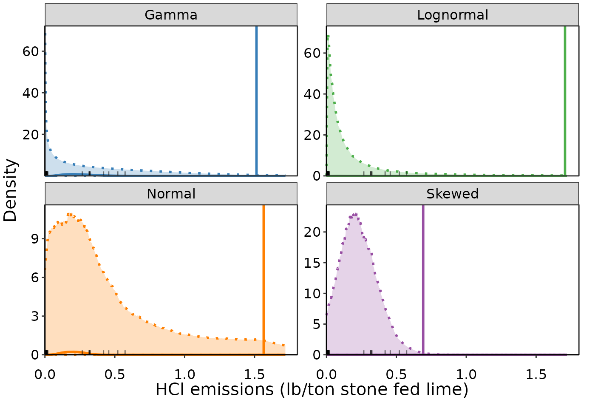
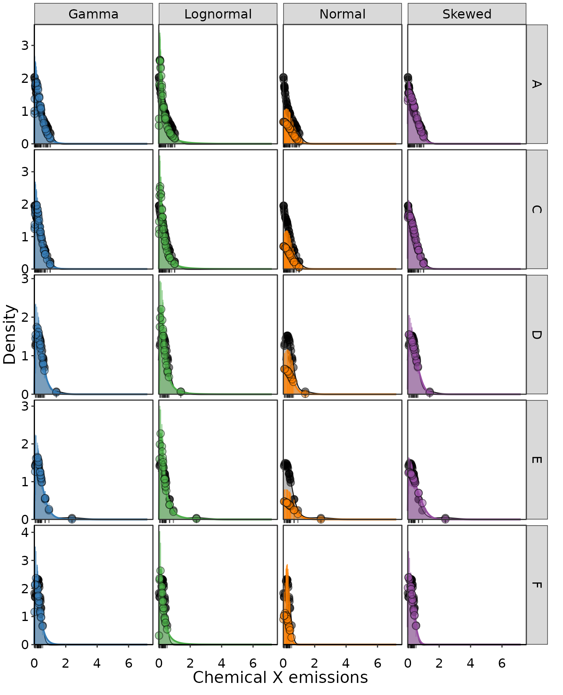
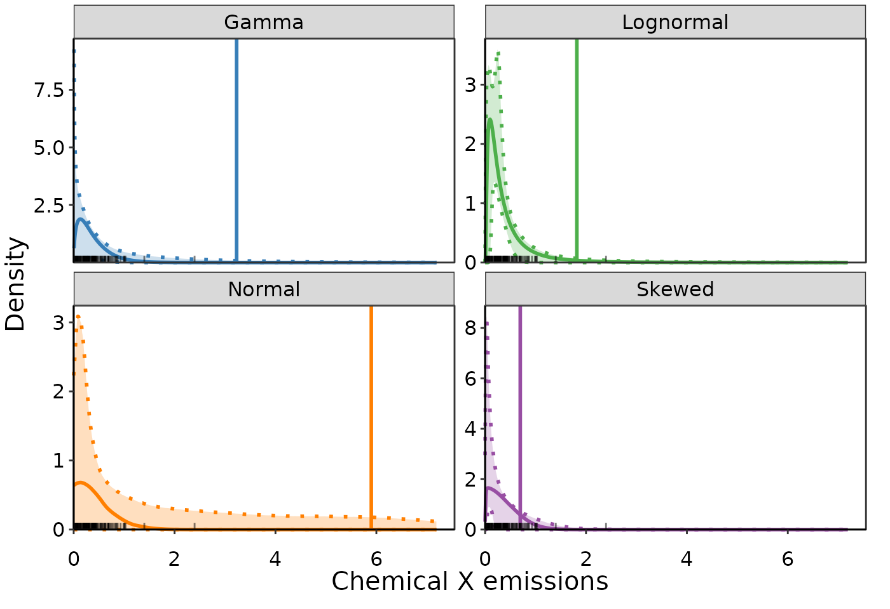

Introduction
One of the benefits of using the Bayesian method for UPL
calculations, is that there are many ways the basic application in
Bayesian_UPL() can be expanded upon for complex situations
that need more nuance. Hierarchical Bayesian modeling offers solutions
to many situations that cannot be handled when using
Normal_UPL(), Lognormal_UPL(), or
Skewed_UPL() due to their restrictive assumptions. For
example, the assumption that emission values were perfectly measured is
often not valid, and we would like a method that can take into account
measurement uncertainty. The hierarchical structure we can use with
Bayesian methods can allow us to say that the true emission
value is a latent, unobserved, state, but we can use a prior
distribution to inform it with a mean and variance based on the observed
measurement and its associated uncertainty. The true emission
values then inform the likelihood distribution for the population of top
performing source emissions.
Another assumption that is not always valid is that the emission test run values are all independent of one another. Typically, there are three runs within a test with some spacing of time between them to encourage independence, which might be minutes or hours depending on the type of measurement. Some sources might only have one test a year, or many within a year, or a much longer or shorter record of testing. It is easy to imagine that there are circumstances where emissions within a test are more similar to each other than a test ten years prior. We can plot emission variance by source and see that sometimes emissions are more similar within a source than between sources. Other possible levels of grouping might be geographic region, or something related to the composition of up stream materials. As long as this grouping structure is not equivalent to different types of control devices, then this might be a source of variance we want to account for in the likelihood models. Fundamentally, when we have non-independence issues, fitting a single likelihood distribution when the reality is a composite of different distributions will be difficult to do well. Furthermore, our objective when setting a standard is to base it on the emissions from the top performing sources. If the data set of top performing sources is deeply unbalanced, for example one source has 56 emission observations and the other four sources only have 3 observations each, then the UPL we calculate is being largely determined by a single source.
All of these issues can be handled when using hierarchical Bayesian
methods. A generic type of hierarchical Bayesian modeling is implemented
in BayesianGroups_UPL(). It works very similar to
Bayesian_UPL(), and you should familiarize yourself with
the contents of vignette("Bayesian-UPL") before using the
hierarchical version. The main difference between the two is the
introduction of a generic grouping variable that is specified in the
argument group. This group is 'sources' by
default, but can be set to any character or factor variable in the data
set using either the variable name or column position. When the
likelihood model is run, a population-wide parent distribution, and a
distribution for each level of the group is fit. The group-level
distributions are determined based on the emissions in each group, and
the population of emissions as whole, since the parameters defining the
group-level distributions are drawn from likelihood of the
population-wide parameters. Really unbalanced data sets are better
balanced through this process of “borrowing strength”. We calculate the
UPL as the percentile at our desired significance level (usually 0.99)
of the average of (usually three) future emission values, where these
values are drawn from the population-wide parent distribution. We assess
goodness-of-fit by comparing the source-specific distributions of our
emissions observations.
Example
Load data and check group-level variance:
First, let’s load and example data set and plot the density of emissions by source. This data set of HCl emissions from lime processing has five top sources for determining the UPL. Below, we set sources to be a ‘factor’. This assigns each unique level of the variable to an integer. In this example, it is handled alphabetically (since we didn’t specify an order), so source ‘A’ will be 1, ‘B’ is 2, etc. It is not necessary to remake the group variable as a factor since the subsequent functions we use will do this for us if we don’t, but it is good practice so we can know the factor levels correspond as we expect them to.
dat_emiss = read.csv("Example_data1.csv")
dat_emiss$sources = as.factor(dat_emiss$sources)
levels(dat_emiss$sources)
#> [1] "A" "B" "C" "D" "E"The source distributions are all quite different. Sources A and B have very low emissions with A in particular having very little variance and B having many more observations than any other source. Sources C, D, and E have higher emissions and D and E have very large variance. This is an unbalanced situation where a single overall distribution assuming independent runs might not be the best way to represent emissions.
ggplot(aes(emissions, fill = sources), data = dat_emiss)+
geom_density(alpha = 0.5, trim = FALSE, bounds = c(0, Inf))+
multi_source_theme()+theme(legend.text = element_text(size = 8))+
guides(fill = guide_legend(nrow = 2, byrow = TRUE),
color = guide_legend(nrow = 2, byrow = TRUE))+
scale_x_continuous(expand = expansion(mult =c (0,0.05)))+
scale_y_continuous(expand = expansion(mult = c(0,0.05)))+
geom_rug(sides = 'b', aes(x = emissions, color = sources),
alpha = 0.5, outside = TRUE)+coord_cartesian(clip = 'off')+
ggtitle("Source Variance")+
ylab("Density")+xlab("HCl emissions (lb/ton stone fed lime)")+
labs(fill = 'Top sources', color = 'Top sources')
Observation density of Lime HCl emissions by top performing source.
Explore distriubtions with hierarchical structures
Similar to the steps outlined in
vignette("Bayesian-UPL"), we will next explore possible
likelihood distributions using BayesianGroups_UPL(). In
this case, when we set a distribution to be 'Normal’, for
example, we are fitting a normal distribution to every group-level and
the overall population. It is possible to mix-and-match distributions,
though that JAGS model would need to be written for that specific
scenario (see section on custom models in
vignette("Bayesian-UPL")). For this example, we will be
using the source as the grouping variable.
distributions = c('Gamma', 'Lognormal', 'Normal', 'Skewed')
results = BayesianGroups_UPL(data = dat_emiss,
group = 'sources',
emissions = 'emissions',
distr_list = distributions)First, let’s look at plots of the resulting distributions. The points
and error bars on these figures represent the median and 95% confidence
interval around the predicted probability for each emission observation,
using the associated likelihood distribution. The colored probability
curves indicate the predicted likelihood across a range of possible
emission values, which by default is
seq(0, 3*max(data$emissions, length.out=1024)), but can be
changed by supplying the xvals argument to
Bayesian_UPL(). The results for plotting the densities at
observations including error bars are stored in
results$obs_pdf_dat, and those for plotting the densities
along the range of xvals are stored in
results$pred_pdf_grp.

Fitted likelihood distributions (columns) for Lime HCl emissions with hierarchical grouping on sources (rows).
Convergence by group
We can see right away that some distributions don’t fit the data well. Indeed, all of the distributions have at least one parameter which fails to converge with the exception of Gamma. This is in part due to the distributions being poor choices, and in part due to the fact that all but one group only have three observations, which is not enough information to be able to converge. Note that we need all parameters to converge: both those for the population and group level. This can be a lot of parameters depending on how many groups you are using, so having enough data can be common limiting factor here.
| Distribution | Parameter | Diagnostic | Converged |
|---|---|---|---|
| Gamma | pop_rate_mu | 1.002 | Yes |
| Gamma | pop_shape_mu | 1.002 | Yes |
| Gamma | pop_rate_sd | 1.014 | Yes |
| Gamma | pop_shape_sd | 1.000 | Yes |
| Gamma | group_rate_A | 1.001 | Yes |
| Gamma | group_rate_B | 1.002 | Yes |
| Gamma | group_rate_C | 1.002 | Yes |
| Gamma | group_rate_D | 1.000 | Yes |
| Gamma | group_rate_E | 1.002 | Yes |
| Gamma | group_shape_A | 1.000 | Yes |
| Gamma | group_shape_B | 1.002 | Yes |
| Gamma | group_shape_C | 1.002 | Yes |
| Gamma | group_shape_D | 1.000 | Yes |
| Gamma | group_shape_E | 1.002 | Yes |
| Lognormal | pop_mu_mu | 1.004 | Yes |
| Lognormal | pop_sd_mu | 1.196 | Weak convergence |
| Lognormal | pop_mu_sd | 1.022 | Yes |
| Lognormal | pop_sd_sd | 1.238 | No |
| Lognormal | group_sd_A | 1.024 | Yes |
| Lognormal | group_sd_B | 1.001 | Yes |
| Lognormal | group_sd_C | 1.015 | Yes |
| Lognormal | group_sd_D | 1.031 | Yes |
| Lognormal | group_sd_E | 1.255 | No |
| Lognormal | group_mu_A | 1.003 | Yes |
| Lognormal | group_mu_B | 1.000 | Yes |
| Lognormal | group_mu_C | 1.006 | Yes |
| Lognormal | group_mu_D | 1.007 | Yes |
| Lognormal | group_mu_E | 1.196 | Weak convergence |
| Normal | pop_mu_mu | 1.374 | No |
| Normal | pop_sd_mu | 1.671 | No |
| Normal | pop_mu_sd | 1.845 | No |
| Normal | pop_sd_sd | 1.860 | No |
| Normal | group_sd_A | 2.108 | No |
| Normal | group_sd_B | 2.457 | No |
| Normal | group_sd_C | 1.114 | Weak convergence |
| Normal | group_sd_D | 1.904 | No |
| Normal | group_sd_E | 1.704 | No |
| Normal | group_mu_A | 2.038 | No |
| Normal | group_mu_B | 2.364 | No |
| Normal | group_mu_C | 1.066 | Yes |
| Normal | group_mu_D | 1.559 | No |
| Normal | group_mu_E | 1.542 | No |
| Skewed | pop_xi_mu | 1.014 | Yes |
| Skewed | pop_omega_mu | 1.004 | Yes |
| Skewed | pop_alpha_mu | 1.109 | Weak convergence |
| Skewed | pop_xi_sd | 1.057 | Yes |
| Skewed | pop_omega_sd | 1.008 | Yes |
| Skewed | pop_alpha_sd | 1.001 | Yes |
| Skewed | omega_A | 1.117 | Weak convergence |
| Skewed | omega_B | 1.004 | Yes |
| Skewed | omega_C | 1.005 | Yes |
| Skewed | omega_D | 1.007 | Yes |
| Skewed | omega_E | 1.009 | Yes |
| Skewed | xi_A | 1.173 | Weak convergence |
| Skewed | xi_B | 1.344 | No |
| Skewed | xi_C | 1.038 | Yes |
| Skewed | xi_D | 1.056 | Yes |
| Skewed | xi_E | 1.036 | Yes |
| Skewed | alpha_A | 1.057 | Yes |
| Skewed | alpha_B | 1.121 | Weak convergence |
| Skewed | alpha_C | 1.054 | Yes |
| Skewed | alpha_D | 1.038 | Yes |
| Skewed | alpha_E | 1.049 | Yes |
Selecting a distribution
Right off the bat we could say that Gamma is the only real choice
here, since the others didn’t converge. In cases where data is so
limiting such as these, it can be helpful to manually supply a smaller,
but still uniform, prior range to promote convergence. This can be done
on a distribution-by-distribution basis following the steps in
vignette('Convergence-and-Priors'). See the references for
BayesianGroups_UPL() for the list order of manual priors.
Note that group-level priors are never specified, since priors are only
needed for the base layer of parameters in hierarchical models, which in
this case are the population-level parameters.
For the sake of this demo, let’s look out how the fit metrics compare
between distributions and groups using results$fit_grp.
First, we can look at the group level
and number of emission observation densities (black points on the plots
above) within the 95% CI of the predicted probability densities (the
error bars on the plots above). Note that Gamma actually had the least
number of observations inside 95% CI; this is because the uncertainties
and the other distributions are so large because they haven’t converged
in many cases, and thus they contain the probability of the observations
despite not being very similar. Also note that in many of these same
cases, the probability density does not integrate to 1, clearly
indicating issues with the fit.
fit_metrics = results$fit_grp| Distribution | SSE | No. Obs. in 95% CI | integral | Group |
|---|---|---|---|---|
| Gamma | 1.61e+04 | 0 | 0.911 | A |
| Gamma | 1.30e+03 | 6 | 0.964 | B |
| Gamma | 1.88e+02 | 0 | 0.917 | C |
| Gamma | 3.99e+00 | 3 | 0.917 | D |
| Gamma | 1.17e+00 | 3 | 0.912 | E |
| Lognormal | 6.25e+02 | 3 | 0.780 | A |
| Lognormal | 1.17e+03 | 12 | 0.958 | B |
| Lognormal | 7.07e+02 | 3 | 0.637 | C |
| Lognormal | 4.50e-01 | 3 | 0.798 | D |
| Lognormal | 1.98e-01 | 3 | 0.731 | E |
| Normal | 3.26e+04 | 0 | 0.000 | A |
| Normal | 2.54e+04 | 8 | 0.000 | B |
| Normal | 6.67e+02 | 3 | 0.644 | C |
| Normal | 7.31e-01 | 3 | 0.609 | D |
| Normal | 1.67e+00 | 3 | 0.663 | E |
| Skewed | 8.79e+02 | 3 | 0.583 | A |
| Skewed | 6.48e+02 | 12 | 0.925 | B |
| Skewed | 1.28e+03 | 3 | 0.650 | C |
| Skewed | 7.84e+00 | 3 | 0.800 | D |
| Skewed | 8.26e+00 | 3 | 0.757 | E |
Upper Predictive Limit
We can also display the total
and count of observations in the 95% CI, as well as the UPL that results
from the population-level probability distribution from the hierarchy of
groups, by calling results$fit_pop.
| Distribution | UPL | SSE | No. Obs. in 95% CI |
|---|---|---|---|
| Gamma | 1.510 | 17600 | 12 |
| Lognormal | 1.710 | 2510 | 24 |
| Normal | 1.570 | 58600 | 17 |
| Skewed | 0.692 | 2820 | 24 |
This results in a UPL of 1.51 HCl emissions (lb/ton stone fed lime).
Let’s look at the population level distributions
(results$pred_pdf_pop) from which we derived the UPL’s:

Population-level fitted probability density distributions (columns) for Lime HCl emissions. Solid curve indicates the median predicted pdf, with the dashed lines and shading indicating the 95 percent CI. Solid vertical lines indicate the UPL.
Note that the uncertainty in population probability at each emission value is quite large. This is a consequence of not converging and not having enough data to estimate this many parameters. Wider distributions will have larger UPL’s by definition.
Compare to assumption of independence
We can run the same set of distributions and compare the UPL outcomes if we assume all runs are independent and don’t account for source variance through any grouping hierarchy.
results_ind = Bayesian_UPL(data = dat_emiss, emissions = 'emissions',
distr_list = distributions)Assuming independence results in comparatively lower UPL’s because the sources with higher emissions are those least represented. Thus, when we have the better balanced hierarchical approach, they get more weight and the UPL is higher. If the sources with fewer observations were lower emissions, we would see the opposite outcome where the hierarchical method grouping by source yields a lower UPL.
| Distribution | UPL | SSE | No. Obs. in 95% CI | integral |
|---|---|---|---|---|
| Gamma | 0.624 | 41.2 | 15 | 0.896 |
| Lognormal | 0.836 | 181.0 | 15 | 0.848 |
| Normal | 0.506 | 1170.0 | 1 | 0.546 |
| Skewed | 0.287 | 839.0 | 4 | 0.946 |
A Better Example
Let’s look at another data set that is much larger, with 126 observations instead of the 24 observations from the first example.
dat_emiss2 = read.csv("./../inst/templates/Example_data4.csv")
dat_emiss2$sources = as.factor(dat_emiss2$boiler.units)
levels(dat_emiss2$sources)
#> [1] "A" "B" "C" "D" "E" "F"
dat_top2 = MACT_existing(dat_emiss2, sources = 'sources', emissions = 'chemX')We will fit all the same distributions to examine:
distributions = c('Gamma', 'Lognormal', 'Normal', 'Skewed')
results2 = BayesianGroups_UPL(data = dat_top2,
group = 'sources',
emissions = 'chemX',
distr_list = distributions)
Fitted likelihood distributions (columns) for Chemical X emissions with hierarchical grouping on sources (rows).
Both the Gamma and Skewed distributions look good. The Skewed has better , and the Gamma has a better count of observations in the 95% CI’s.
| Distribution | UPL | SSE | No. Obs. in 95% CI |
|---|---|---|---|
| Gamma | 3.230 | 12.00 | 98 |
| Lognormal | 1.820 | 29.20 | 68 |
| Normal | 5.900 | 84.70 | 32 |
| Skewed | 0.697 | 7.09 | 94 |
Checking for convergence we find that every single parameter technically converged (with the exception of the Normal distribution), though a couple are considered weak convergence.
| Distribution | Parameter | Diagnostic | Converged |
|---|---|---|---|
| Gamma | pop_rate_mu | 1.016 | Yes |
| Gamma | pop_shape_mu | 1.011 | Yes |
| Gamma | pop_rate_sd | 1.119 | Weak convergence |
| Gamma | pop_shape_sd | 1.048 | Yes |
| Gamma | group_rate_F | 1.016 | Yes |
| Gamma | group_rate_C | 1.002 | Yes |
| Gamma | group_rate_A | 1.002 | Yes |
| Gamma | group_rate_D | 1.008 | Yes |
| Gamma | group_rate_E | 1.001 | Yes |
| Gamma | group_shape_F | 1.011 | Yes |
| Gamma | group_shape_C | 1.001 | Yes |
| Gamma | group_shape_A | 1.001 | Yes |
| Gamma | group_shape_D | 1.009 | Yes |
| Gamma | group_shape_E | 1.002 | Yes |
| Lognormal | pop_mu_mu | 1.002 | Yes |
| Lognormal | pop_sd_mu | 1.037 | Yes |
| Lognormal | pop_mu_sd | 1.007 | Yes |
| Lognormal | pop_sd_sd | 1.123 | Weak convergence |
| Lognormal | group_sd_F | 1.001 | Yes |
| Lognormal | group_sd_C | 1.003 | Yes |
| Lognormal | group_sd_A | 1.002 | Yes |
| Lognormal | group_sd_D | 1.001 | Yes |
| Lognormal | group_sd_E | 1.002 | Yes |
| Lognormal | group_mu_F | 1.000 | Yes |
| Lognormal | group_mu_C | 1.000 | Yes |
| Lognormal | group_mu_A | 1.001 | Yes |
| Lognormal | group_mu_D | 1.001 | Yes |
| Lognormal | group_mu_E | 1.000 | Yes |
| Normal | pop_mu_mu | 1.232 | No |
| Normal | pop_sd_mu | 1.289 | No |
| Normal | pop_mu_sd | 1.375 | No |
| Normal | pop_sd_sd | 1.177 | Weak convergence |
| Normal | group_sd_F | 1.329 | No |
| Normal | group_sd_C | 1.294 | No |
| Normal | group_sd_A | 1.298 | No |
| Normal | group_sd_D | 1.343 | No |
| Normal | group_sd_E | 1.335 | No |
| Normal | group_mu_F | 1.356 | No |
| Normal | group_mu_C | 1.336 | No |
| Normal | group_mu_A | 1.347 | No |
| Normal | group_mu_D | 1.361 | No |
| Normal | group_mu_E | 1.347 | No |
| Skewed | pop_xi_mu | 1.001 | Yes |
| Skewed | pop_omega_mu | 1.027 | Yes |
| Skewed | pop_alpha_mu | 1.001 | Yes |
| Skewed | pop_xi_sd | 1.002 | Yes |
| Skewed | pop_omega_sd | 1.095 | Yes |
| Skewed | pop_alpha_sd | 1.001 | Yes |
| Skewed | omega_F | 1.002 | Yes |
| Skewed | omega_C | 1.001 | Yes |
| Skewed | omega_A | 1.001 | Yes |
| Skewed | omega_D | 1.000 | Yes |
| Skewed | omega_E | 1.000 | Yes |
| Skewed | xi_F | 1.001 | Yes |
| Skewed | xi_C | 1.001 | Yes |
| Skewed | xi_A | 1.001 | Yes |
| Skewed | xi_D | 1.001 | Yes |
| Skewed | xi_E | 1.001 | Yes |
| Skewed | alpha_F | 1.001 | Yes |
| Skewed | alpha_C | 1.001 | Yes |
| Skewed | alpha_A | 1.000 | Yes |
| Skewed | alpha_D | 1.001 | Yes |
| Skewed | alpha_E | 1.000 | Yes |
Plotting the UPL’s on the population-level PDF’s we get:

Population-level fitted probability density distributions (columns) for Chemical X emissions. Solid curve indicates the median predicted pdf, with the dashed lines and shading indicating the 95 percent CI. Solid vertical lines indicate the UPL.
This example, with about 5 times as much data, has much less uncertainty than the first example. We can compare these to the non-grouped version assuming fully independent test runs:
results_ind2 = Bayesian_UPL(data = dat_top2, emissions = 'chemX',
distr_list = distributions)| Distribution | UPL | SSE | No. Obs. in 95% CI | integral |
|---|---|---|---|---|
| Gamma | 0.953 | 4.51 | 110 | 0.996 |
| Lognormal | 1.780 | 27.20 | 31 | 0.995 |
| Normal | 0.887 | 51.80 | 1 | 0.541 |
| Skewed | 0.458 | 1.58 | 69 | 0.996 |